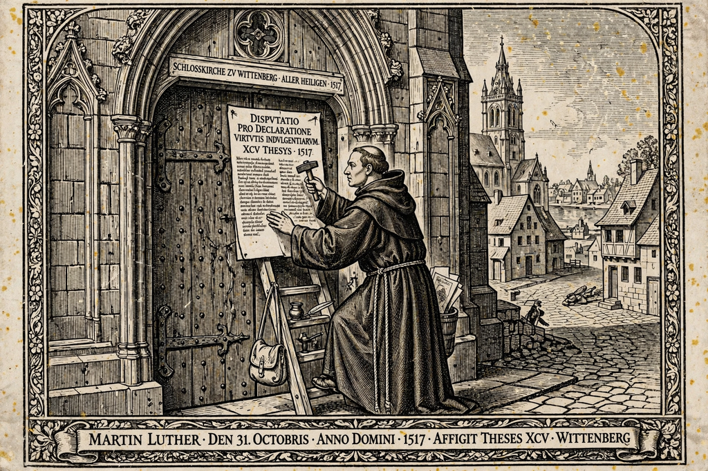

From Wikipedia, the free encyclopedia
| Reformation | |
|---|---|
 Luther and the Ninety-five Theses, 1517 | |
| Date | 31 October 1517 – 1648 |
| Key figures | Martin Luther, John Calvin, Huldrych Zwingli, Thomas Cranmer |
| Outcome | Division of Western Christianity; Protestant churches; Catholic Counter-Reformation; religious wars in Europe |
The Reformation, also known as the Protestant Reformation, was a major movement in 16th-century Western Christianity that challenged the doctrines and authority of the Roman Catholic Church, giving rise to Protestant churches and reshaping Europe's religious, political, and cultural landscape. It is conventionally dated from 31 October 1517, when Martin Luther published his Ninety-five Theses against the sale of indulgences.
Long-standing grievances fed the movement: the sale of indulgences, simony, clerical corruption, the Western Schism's damage to papal prestige, and Renaissance humanism's return to biblical sources (ad fontes) in the original Greek and Hebrew. Earlier movements — the Waldensians, Lollards following John Wycliffe, and the Hussites following Jan Hus — anticipated reform. The printing press with movable type allowed reformers' ideas to spread rapidly and cheaply across Europe.
Luther, an Augustinian friar and Wittenberg theologian, developed the doctrine of justification by faith alone (sola fide) and the authority of Scripture alone (sola scriptura). Summoned to the Diet of Worms in 1521, he refused to recant — "Here I stand" — and was outlawed, but protected by Frederick the Wise of Saxony. Lutheran churches took hold across northern Germany and Scandinavia. In Switzerland, Huldrych Zwingli reformed Zurich, and John Calvin transformed Geneva into a model Reformed city whose influence spread to France (the Huguenots), the Netherlands, Scotland under John Knox, and England's Puritans. A more radical wing — Anabaptists and other groups of the Radical Reformation — went further, rejecting infant baptism and often the sword.
The English Reformation proceeded initially from politics: Henry VIII's desire to annul his marriage to Catherine of Aragon led to the break with Rome (1534), the royal supremacy, and the dissolution of the monasteries. Under Edward VI the church became more Protestant in doctrine; under Mary I it returned briefly to Rome and persecuted Protestants; the Elizabethan settlement of 1559 and the Thirty-nine Articles gave the Church of England its enduring shape, ancestor of the worldwide Anglican Communion. Dissenters who resisted the settlement included Thomas More and John Fisher, both executed in 1535.
The Catholic Church responded with the Counter-Reformation: the Council of Trent (1545–1563) clarified doctrine and reformed discipline; new orders such as the Jesuits (founded 1540) led renewal and missions. Rivalry erupted in the French Wars of Religion, the Dutch Revolt, and the Thirty Years' War (1618–1648), concluded by the Peace of Westphalia, which confirmed the principle that rulers determined their territories' religion.
The Reformation permanently divided Western Christianity, elevated vernacular Bibles and literacy, reshaped church-state relations, and contributed — scholars debate how far — to developments in education, capitalism, and individual conscience. Its 500th anniversary in 2017 was marked by commemorations and by historic ecumenical gestures, including the joint Catholic-Lutheran commemoration at Lund in 2016.